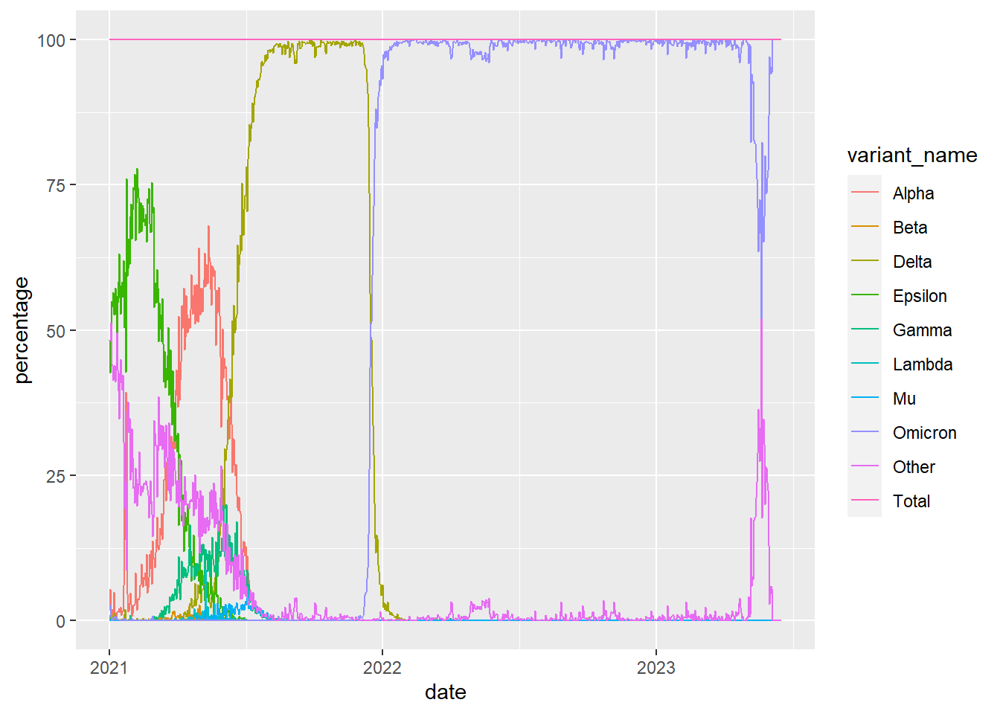
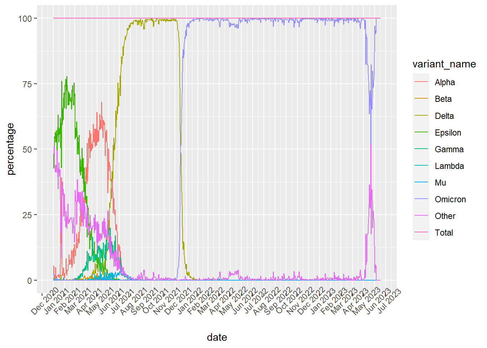

# I will use ggplot2 to make my figure, the following chunk of code loads the package. I may need scales, dplyr, and lubridate to refine my data to make a figure, so I have loaded those as well. library(ggplot2)
Warning: package 'ggplot2' was built under R version 4.2.3
library(scales)
Warning: package 'scales' was built under R version 4.2.3
library(dplyr)library(lubridate)
Warning: package 'lubridate' was built under R version 4.2.3
# I need to obtain my data, which is in a csv file. I have renamed my data file "covid19" to make it easier to type. I need to check my file to ensure I have data in columns, hence the head, function. I also need to make sure that the data is in a format that I can use for my figure. The str function shows me how the data is saved, and I can see that my dates are formatted as characters, which I will fix in the next chunk of code. covid19 <-read.csv("covid19_variants.csv") head(covid19)
date area area_type variant_name specimens percentage
1 2021-01-01 California State Omicron 1 1.67
2 2021-01-01 California State Mu 0 0.00
3 2021-01-01 California State Gamma 0 0.00
4 2021-01-01 California State Epsilon 29 48.33
5 2021-01-01 California State Other 29 48.33
6 2021-01-01 California State Total 60 100.00
specimens_7d_avg percentage_7d_avg
1 NA NA
2 NA NA
3 NA NA
4 NA NA
5 NA NA
6 NA NA
str(covid19)
'data.frame': 8980 obs. of 8 variables:
$ date : chr "2021-01-01" "2021-01-01" "2021-01-01" "2021-01-01" ...
$ area : chr "California" "California" "California" "California" ...
$ area_type : chr "State" "State" "State" "State" ...
$ variant_name : chr "Omicron" "Mu" "Gamma" "Epsilon" ...
$ specimens : num 1 0 0 29 29 60 0 0 0 1 ...
$ percentage : num 1.67 0 0 48.33 48.33 ...
$ specimens_7d_avg : num NA NA NA NA NA NA NA NA NA NA ...
$ percentage_7d_avg: num NA NA NA NA NA NA NA NA NA NA ...
# My dates were saved as characters, using the function below, they have now been converted to be read as dates. I check this using the str function once more. covid19$date <-ymd(covid19$date)str(covid19)
'data.frame': 8980 obs. of 8 variables:
$ date : Date, format: "2021-01-01" "2021-01-01" ...
$ area : chr "California" "California" "California" "California" ...
$ area_type : chr "State" "State" "State" "State" ...
$ variant_name : chr "Omicron" "Mu" "Gamma" "Epsilon" ...
$ specimens : num 1 0 0 29 29 60 0 0 0 1 ...
$ percentage : num 1.67 0 0 48.33 48.33 ...
$ specimens_7d_avg : num NA NA NA NA NA NA NA NA NA NA ...
$ percentage_7d_avg: num NA NA NA NA NA NA NA NA NA NA ...
# I will build my figure and modify it in parts. The first part is to plot my data roughly. I have chosen to plot a line graph, where the variants are in different colors, using the date as my x-axis and the percentage of variants observed as my y-axis. a <-ggplot(data = covid19) +aes(x=date, y=percentage, color=variant_name) +geom_line() a

# I will now change my x-axis, labeling the individual months in the yearb <- a +scale_x_date(date_breaks="1 month", date_labels ="%b %Y") +theme(axis.text.x =element_text(angle =45)) b

# Finally, I added a title and relabeled my axes as well as my legend. c <- b +labs(title ="Covid 19 Variants in California",x =" " , y ="Percentage of Sequenced Variants",caption ="Figure 1: Exam Question 10" ) +labs(color ="Variant")c